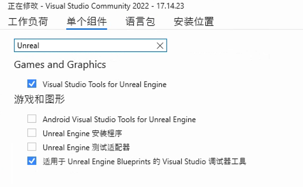

疑难解答
本页面包含在开发 HoloOcean 过程中可能出现的常见问题及其解答。
我无法在 Windows 上的 Unreal Engine 中打开 HoloOcean
通常，问题出在 Visual Studio 的设置上。请打开 Visual Studio 安装程序并修改你的 Visual Studio 设置。请确认你已经下载了所有 Unreal Engine 所需的组件。

请再次尝试点击 holodeck.uproject 文件，如果提示重建，请选择“是”。
如果仍然出现错误，您需要在 Visual Studio 中手动构建该项目。右键单击 holodeck.uproject 文件，然后选择“生成 Visual Studio 项目文件”。如果在 Visual Studio 中打开项目时遇到问题，请参阅编译部分。
Unreal Engine 源代码中也存在一些可能导致问题的错误。这些文件可以更改而不影响 HoloOcean。
当我运行 HoloOcean 时，我对代码的任何更改都没有显示。
如果您更改了任何 C 语言文件，您必须通过 Unreal Engine 编辑器或 Visual Studio 编译 HoloOcean。请参阅编译指南。
如果您更改了任何 Python 文件，您必须进入 PythonAPI/carla/ 目录并运行 pip install -e .。
我在关卡中添加了新对象，但它们在声呐上没有显示
首先，请确保已启用正确的碰撞设置。请参阅有关对象和声呐的碰撞设置说明。
还请确保删除之前为关卡生成的任何八叉树。每当向环境中添加新对象时，都需要重新生成八叉树。